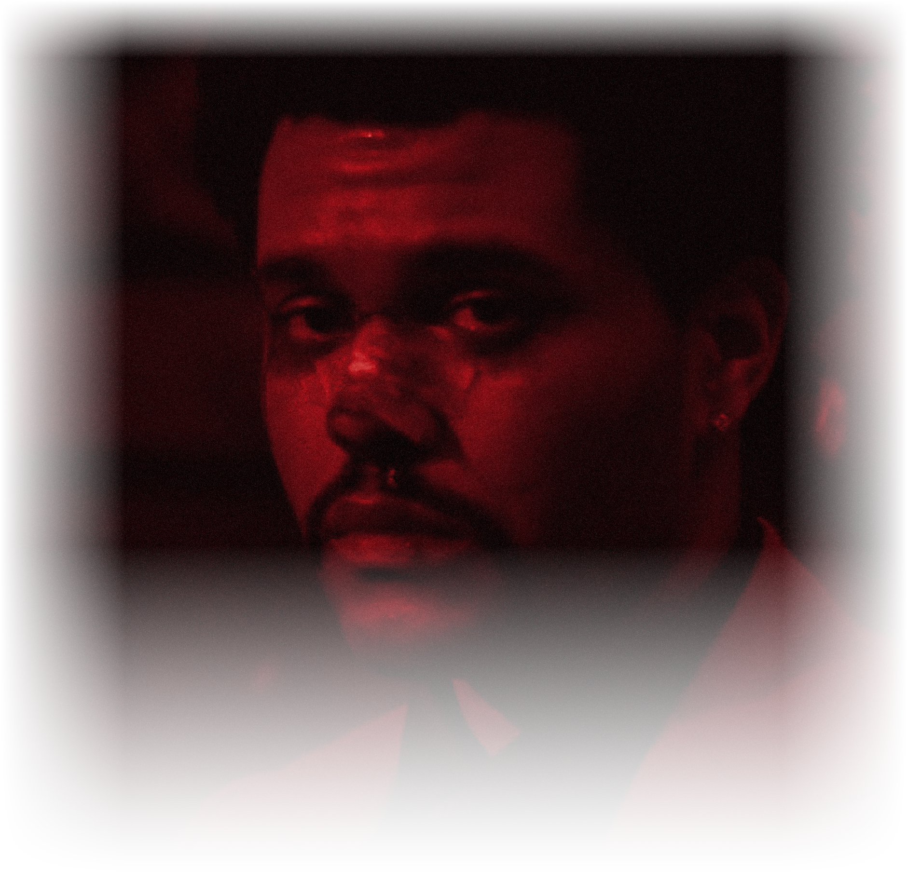

THE WEEKND
AFTER
AFTER
HOURS

REC03:14 AMLAS VEGAS
03HEARTLESS
Never need a bitch, I'm what a bitch need
Tryna find the one that can fix me
I've been runnin' through the money, need a hit; please
Why? 'Cause I'm heartless
And I'm back to my ways 'cause I'm heartless
All this money and this pain got me heartless
Low life for life 'cause I'm heartless
Tryna find the one that can fix me
I've been runnin' through the money, need a hit; please
Why? 'Cause I'm heartless
And I'm back to my ways 'cause I'm heartless
All this money and this pain got me heartless
Low life for life 'cause I'm heartless
14BLEED OUT
Well, I don't wanna touch the sky no more
I just wanna feel the ground when I'm coming down
It's been way too long
And been way too long
And I don't even wanna get high no more
Just want it out of my life
I just wanna feel the ground when I'm coming down
It's been way too long
And been way too long
And I don't even wanna get high no more
Just want it out of my life